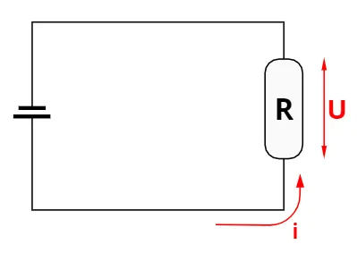

As leis de Ohm permitem calcular grandezas físicas essenciais, como tensão, corrente e resistência elétrica em circuitos. No entanto, elas só se aplicam a resistores ôhmicos, ou seja, materiais cuja resistência permanece constante.
A 1ª Lei de Ohm é um princípio fundamental da eletricidade que estabelece a relação entre três grandezas: tensão elétrica (U), corrente elétrica (I) e resistência elétrica (R).
Ela afirma que, em um condutor ôhmico, a tensão entre dois pontos é diretamente proporcional à corrente que o atravessa. A fórmula que expressa essa relação é:
U = R × I
Onde:
Essa fórmula permite calcular qualquer uma das três grandezas, desde que se conheça as outras duas. Ela só é válida para materiais ôhmicos, ou seja, que mantêm a resistência constante.
